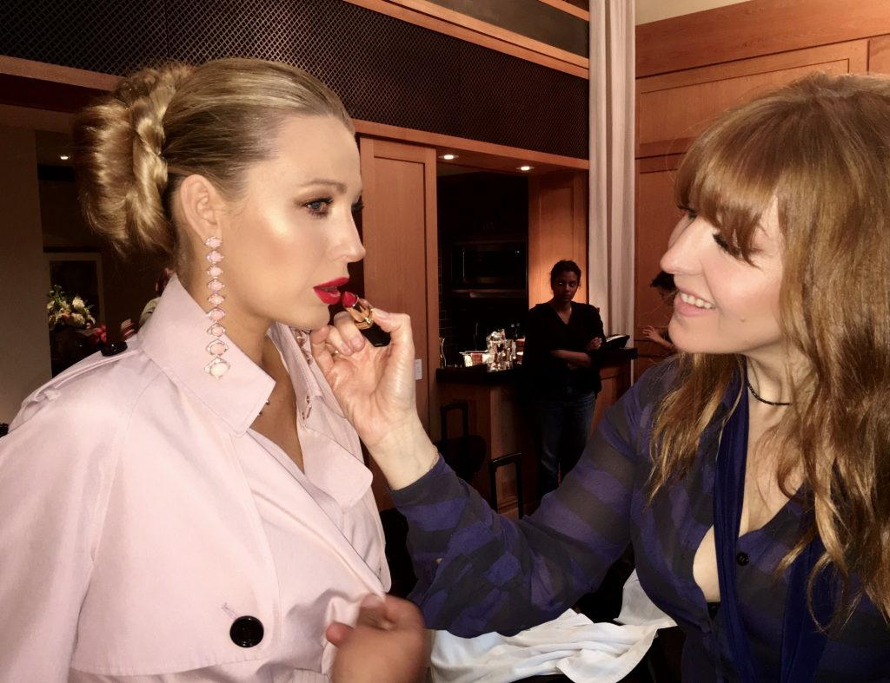

Volume: 110/mo | CPC: $1.90 | Competition: 0.23
About 39,300,00 results (0.48 seconds)
5 Iconic makeup artists you need to follow on Instagram
-

- Charlotte Tilbury. We all know her as the flame-haired
boss lady behind the Charlotte Tilbury brand, but as a
makeup artist her client list is basically like the Met
Gala invitee list. ... - Mary Greenwell. ...
- Lisa Eldridge. ...
- Sir John. ...
- Val Garland.
5 Iconic makeup artists you need to follow on Instagram
https://www.confetti.ie/beauty/5-iconic-makeup-artists-need-follow-instagram-28740
People also ask
Just scroll to see these 10 to celebrity makeup artists below
- Robin Black. ...
- Charlotte Tilbury. ...
- Mario Dedivanovic. ...
- Pati Dubroff. ...
- Pat McGrath. ...
- Joyce Bonelli. ...
- Mylah Morales. ...
- Tom Pecheux. More Items
Search for: Who is the best makeup artist?
Your pores can become enlarged if you habitually sleep in your makeup. At night is when your skin repairs and rebuilds and you need to give it a fighting chance with a clean slate. Skin cell mitosis is at it's peak between 11 p.m. and 12 a.m. so make sure it's not inhibited by layers of foundation and powder.
More Beauty | Answers to 15 of the Most Common Makeup Questions